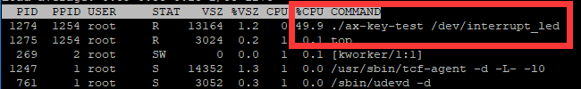
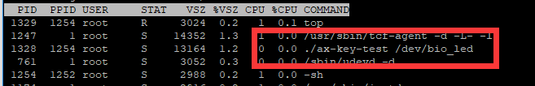

阻塞IO#
IO是Input stream/Output stream的缩写，即输入输出。对于驱动程序来说的IO就是用户程序对设备资源的访问和操作。接下来简单的说说几种IO模型以及Linux对他们的支持。
阻塞和非阻塞、同步和异步与IO操作#
阻塞和非阻塞、同步和异步是在IO操作中几种不可避免的状态。
先分开来看，通俗的讲：
阻塞就是指某个操作如果不满足执行的条件，他会一直处于等待状态直至条件满足。
非阻塞是指某个操作如果不满足执行的条件，他不会等待并且会返回未执行的结果。
同步指多个操作同时发生时，这些操作需要排队逐个执行。
异步指多个操作同时发生时，这些操作可以一起执行。
对于驱动来说IO操作一般可以理解为对外设的读写。一个完整的IO操作有两个阶段：
第一阶段：查看外设数据是否就绪；
第二阶段：数据就绪，读写外设数据。
再结合起来看。
阻塞IO、非阻塞IO：
当应用程序发出了IO请求。如果目标外设或数据没有准备好，对于阻塞IO来说，就会在read方法一直等待，直到数据准备好才会返回。而非阻塞IO会直接返回数据未准备好，应用程序再去处理NG的情况，重新读取或是其他。可见阻塞IO和非阻塞IO体现在IO操作的第一阶段。
同步IO、异步IO：
同步IO和异步IO实际上是针对应用程序和内核的交互来说的，应用程序发出IO请求后，如果数据没有就绪，需要应用程序不断的去轮询，直到准备就绪再执行第二阶段。对于异步IO，应用程序发出IO请求之后，第一阶段和第二阶段全都交友内核完成，当然驱动程序也属于内核的一部分。
阻塞IO#
这里说的阻塞IO实际上是同步阻塞IO。Linux的阻塞式访问中，应用程序调用read()函数从设备中读取数据时，如果设备或者数据没有准备好，就会进入休眠让出CPU资源，准备好时就会唤醒并返回数据给应用程序。 内核提供了等待队列机制来实现这里的休眠唤醒工作。
等待队列#
等待队列也就是进程组成的队列，Linux在系统执行会根据不同的状态把进程分成不同的队列，等待队列就是其中之一。
在驱动中使用等待队列步骤如下:
创建并初始化等待队列
创建等待队列的方式为创建一个等待队列头，往队列头下添加项即为队列。队列头定义再include/linux/wait.h中，详情如下：
struct __wait_queue_head {
spinlock_t lock;
struct list_head task_list;
};
typedef struct __wait_queue_head wait_queue_head_t;
定义好队列头之后，使用下面的函数来初始化队列头：
void init_waitqueue_head(wait_queue_head_t *q) |
也可以使用宏定义
DECLARE_WAIT_QUEUE_HEAD_ONSTACK(name) |
一次性完成队列头的创建和初始化，name为队列头的名字。
创建代表进程的等待队列项
等待队列项也定义在include/linux/wait.h头文件中，可以用宏定义：
DECLARE_WAITQUEUE(name, tsk) |
一次性完成队列项的定义和初始化，name为队列项的名字，tsk为队列项指代的进程，一般设置为current。current是内核中的一个全局变量，表示当前进程。
添加或移除等待队列项到等待队列中并进入休眠
设备或数据不可访问时，就把进程添加进队列，使用接口函数：
void add_wait_queue(wait_queue_head_t *q, wait_queue_t *wait) |
q为需要加入的队列头，wait就是需要加入的队列项。
添加完成后使用函数
__set_current_state (state_value); |
来设置进程状态，state_value 可以为：
TASK_UNINTERRUPTIBLE休眠不可被信号打断；
TASK_INTERRUPTIBLE休眠可被信号打断。
之后调用任务切换函数
schedule(); |
使当前进程进入休眠。如果被唤醒就会接着这个函数的位置往下运行。
紧接着，如果进程被设置成了TASK_INTERRUPTIBLE状态，有必要的话，还需要判断进程是不是被信号唤醒，如果是的话那就是误唤醒，需要让进程重新休眠。
使用函数
signal_pending(current) |
来判断当前进程是否为信号唤醒，current就是当前进程，如果是则返回真。
进程被唤醒后，使用
set_current_state(TASK_RUNNING) |
设置当前进程为运行状态。
如果设备可访问了，队列项从队列头中移除，使用函数：
void remove_wait_queue(wait_queue_head_t *q, wait_queue_t *wait) |
主动唤醒或等待事件
进程休眠后使用下面两个函数来主动唤醒整个队列：
void wake_up(wait_queue_head_t *q) void wake_up_interruptible(wait_queue_head_t *q) |
wake_up 函数可以唤醒处于 TASK_INTERRUPTIBLE 和TASK_UNINTERRUPTIBLE 状态的进程。 wake_up_interruptible 函数只能唤醒处于 TASK_INTERRUPTIBLE 状态的进程。
除了主动唤醒之外，还可以设置成等待某个条件满足后自动唤醒，Linux提供了这些宏：
/* 此函数会把进程设置为TASK_UNINTERRUPTIBLE， condition为真(条件)时会唤醒队列wq，会一直阻塞等待condition为真 */
wait_event(wq, condition)
/* 与wait_event类似，不过加了超时机制，timeout为超时时间单位为jiffies，时间到了之后即使条件不满足也会唤醒队列wq */
wait_event_timeout(wq, condition, timeout)
/*与wait_event类似，但是会把进程设置为TASK_INTERRUPTIBLE */
wait_event_interruptible(wq, condition)
/*与wait_event\_ timeout类似，，但是会把进程设置为TASK_INTERRUPTIBLE */
wait_event_interruptible_timeout(wq, condition, timeout)
实验#
我们前面做的按键实验中，测试程序中读取key状态的方式都是在while循环中不断的去调用read方法。而我们在驱动程序中实现的read方法也只是简单的返回按键当前的值。这样做就导致测试程序和驱动程序都一直处于活跃状态，导致cpu占用率很高。以上一章的例程为例，使用./ax-key-test /dev/interrupt_led&命令让ax-key-test程序在后台运行。再使用top命令来查看cpu的占用情况，如下图：
双cpu的soc光是一个按键程序就占用了49.9%几乎是一个cpu的资源，显然是不可取的。
分析一下，应用程序轮询read函数读取按键状态，大部分时候读到的都是未被按下的状态，而我们需要捕捉到的仅是按键被按下的状态，那是不是可以理解为，按键未按下就等同于我们需要的数据还没有准备好呢？在此基础上，我们就可以使用等待队列来是驱动程序中的read进程在按键没有按下时进入休眠，应用程序的read函数就得不到返回值，就不会一直轮询，从而降低cpu占用率。然后在按键按下时，唤醒进程，又能达到驱动程序捕捉按键被按下的动作的要求。
原理图#
led部分和 字符设备 章节相同。
key部分和 gpio输入 章节相同。
设备树#
和 gpio输入 章节相同。
驱动程序#
使用 petalinux 新建名为”ax-bio-drv”的驱劢程序，并执行 petalinux-config -c rootfs 命令选上新增的驱动程序。
在 ax-bio-drv.c 文件中输入下面的代码：
#include <linux/module.h>
#include <linux/kernel.h>
#include <linux/init.h>
#include <linux/types.h>
#include <linux/errno.h>
#include <linux/cdev.h>
#include <linux/of.h>
#include <linux/of_address.h>
#include <linux/of_gpio.h>
#include <linux/device.h>
#include <linux/delay.h>
#include <linux/init.h>
#include <linux/gpio.h>
#include <linux/semaphore.h>
#include <linux/timer.h>
#include <linux/of_irq.h>
#include <linux/irq.h>
#include <linux/interrupt.h>
#include <asm/uaccess.h>
#include <asm/mach/map.h>
#include <asm/io.h>
/* 设备节点名称 */
#define DEVICE_NAME "bio_led"
/* 设备号个数 */
#define DEVID_COUNT 1
/* 驱动个数 */
#define DRIVE_COUNT 1
/* 主设备号 */
#define MAJOR_U
/* 次设备号 */
#define MINOR_U 0
/* 把驱动代码中会用到的数据打包进设备结构体 */
struct alinx_char_dev {
/** 字符设备框架 **/
dev_t devid; //设备号
struct cdev cdev; //字符设备
struct class *class; //类
struct device *device; //设备
struct device_node *nd; //设备树的设备节点
/** gpio **/
int alinx_key_gpio; //gpio号
/** 并发处理 **/
atomic_t key_sts; //记录按键状态, 为1时被按下
/** 中断 **/
unsigned int irq; //中断号
/** 定时器 **/
struct timer_list timer; //定时器
/** 等待队列 **/
wait_queue_head_t wait_q_h; //等待队列头
};
/* 声明设备结构体 */
static struct alinx_char_dev alinx_char = {
.cdev = {
.owner = THIS_MODULE,
},
};
/** 回掉 **/
/* 中断服务函数 */
static irqreturn_t key_handler(int irq, void *dev)
{
/* 按键按下或抬起时会进入中断 */
/* 开启50毫秒的定时器用作防抖动 */
mod_timer(&alinx_char.timer, jiffies + msecs_to_jiffies(50));
return IRQ_RETVAL(IRQ_HANDLED);
}
/* 定时器服务函数 */
void timer_function(struct timer_list *timer)
{
/* value用于获取按键值 */
unsigned char value;
/* 获取按键值 */
value = gpio_get_value(alinx_char.alinx_key_gpio);
if(value == 0)
{
/* 按键按下, 状态置1 */
atomic_set(&alinx_char.key_sts, 1);
/** 等待队列 **/
/* 唤醒进程 */
wake_up_interruptible(&alinx_char.wait_q_h);
}
else
{
/* 按键抬起 */
}
}
/** 系统调用实现 **/
/* open函数实现, 对应到Linux系统调用函数的open函数 */
static int char_drv_open(struct inode *inode_p, struct file *file_p)
{
printk("gpio_test module open\n");
return 0;
}
/* read函数实现, 对应到Linux系统调用函数的write函数 */
static ssize_t char_drv_read(struct file *file_p, char __user *buf, size_t len, loff_t *loff_t_p)
{
unsigned int keysts = 0;
int ret;
/* 读取key的状态 */
keysts = atomic_read(&alinx_char.key_sts);
/* 判断当前按键状态 */
if(!keysts)
{
/* 按键未被按下(数据未准备好) */
/* 以当前进程创建并初始化为队列项 */
DECLARE_WAITQUEUE(queue_mem, current);
/* 把当前进程的队列项添加到队列头 */
add_wait_queue(&alinx_char.wait_q_h, &queue_mem);
/* 设置当前进成为可被信号打断的状态 */
__set_current_state(TASK_INTERRUPTIBLE);
/* 切换进程, 是当前进程休眠 */
schedule();
/* 被唤醒, 修改当前进程状态为RUNNING */
set_current_state(TASK_RUNNING);
/* 把当前进程的队列项从队列头中删除 */
remove_wait_queue(&alinx_char.wait_q_h, &queue_mem);
/* 判断是否是被信号唤醒 */
if(signal_pending(current))
{
/* 如果是直接返回错误 */
return -ERESTARTSYS;
}
else
{
/* 被按键唤醒 */
}
}
else
{
/* 按键被按下(数据准备好了) */
}
/* 读取key的状态 */
keysts = atomic_read(&alinx_char.key_sts);
/* 返回按键状态值 */
ret = copy_to_user(buf, &keysts, sizeof(keysts));
/* 清除按键状态 */
atomic_set(&alinx_char.key_sts, 0);
return 0;
}
/* release函数实现, 对应到Linux系统调用函数的close函数 */
static int char_drv_release(struct inode *inode_p, struct file *file_p)
{
printk("gpio_test module release\n");
return 0;
}
/* file_operations结构体声明, 是上面open、write实现函数与系统调用函数对应的关键 */
static struct file_operations ax_char_fops = {
.owner = THIS_MODULE,
.open = char_drv_open,
.read = char_drv_read,
.release = char_drv_release,
};
/* 模块加载时会调用的函数 */
static int __init char_drv_init(void)
{
/* 用于接受返回值 */
u32 ret = 0;
/** 并发处理 **/
/* 初始化原子变量 */
atomic_set(&alinx_char.key_sts, 0);
/** gpio框架 **/
/* 获取设备节点 */
alinx_char.nd = of_find_node_by_path("/alinxkey");
if(alinx_char.nd == NULL)
{
printk("alinx_char node not find\r\n");
return -EINVAL;
}
else
{
printk("alinx_char node find\r\n");
}
/* 获取节点中gpio标号 */
alinx_char.alinx_key_gpio = of_get_named_gpio(alinx_char.nd, "alinxkey-gpios", 0);
if(alinx_char.alinx_key_gpio < 0)
{
printk("can not get alinxkey-gpios");
return -EINVAL;
}
printk("alinxkey-gpio num = %d\r\n", alinx_char.alinx_key_gpio);
/* 申请gpio标号对应的引脚 */
ret = gpio_request(alinx_char.alinx_key_gpio, "alinxkey");
if(ret != 0)
{
printk("can not request gpio\r\n");
return -EINVAL;
}
/* 把这个io设置为输入 */
ret = gpio_direction_input(alinx_char.alinx_key_gpio);
if(ret < 0)
{
printk("can not set gpio\r\n");
return -EINVAL;
}
/** 中断 **/
/* 获取中断号 */
alinx_char.irq = gpio_to_irq(alinx_char.alinx_key_gpio);
/* 申请中断 */
ret = request_irq(alinx_char.irq,
key_handler,
IRQF_TRIGGER_FALLING | IRQF_TRIGGER_RISING,
"alinxkey",
NULL);
if(ret < 0)
{
printk("irq %d request failed\r\n", alinx_char.irq);
return -EFAULT;
}
/** 定时器 **/
__init_timer(&alinx_char.timer, timer_function, 0);
/** 等待队列 **/
init_waitqueue_head(&alinx_char.wait_q_h);
/** 字符设备框架 **/
/* 注册设备号 */
alloc_chrdev_region(&alinx_char.devid, MINOR_U, DEVID_COUNT, DEVICE_NAME);
/* 初始化字符设备结构体 */
cdev_init(&alinx_char.cdev, &ax_char_fops);
/* 注册字符设备 */
cdev_add(&alinx_char.cdev, alinx_char.devid, DRIVE_COUNT);
/* 创建类 */
alinx_char.class = class_create(THIS_MODULE, DEVICE_NAME);
if(IS_ERR(alinx_char.class))
{
return PTR_ERR(alinx_char.class);
}
/* 创建设备节点 */
alinx_char.device = device_create(alinx_char.class, NULL,
alinx_char.devid, NULL,
DEVICE_NAME);
if (IS_ERR(alinx_char.device))
{
return PTR_ERR(alinx_char.device);
}
return 0;
}
/* 卸载模块 */
static void __exit char_drv_exit(void)
{
/** gpio **/
/* 释放gpio */
gpio_free(alinx_char.alinx_key_gpio);
/** 中断 **/
/* 释放中断 */
free_irq(alinx_char.irq, NULL);
/** 定时器 **/
/* 删除定时器 */
del_timer_sync(&alinx_char.timer);
/** 字符设备框架 **/
/* 注销字符设备 */
cdev_del(&alinx_char.cdev);
/* 注销设备号 */
unregister_chrdev_region(alinx_char.devid, DEVID_COUNT);
/* 删除设备节点 */
device_destroy(alinx_char.class, alinx_char.devid);
/* 删除类 */
class_destroy(alinx_char.class);
printk("timer_led_dev_exit_ok\n");
}
/* 标记加载、卸载函数 */
module_init(char_drv_init);
module_exit(char_drv_exit);
/* 驱动描述信息 */
MODULE_AUTHOR("Alinx");
MODULE_ALIAS("alinx char");
MODULE_DESCRIPTION("BIO LED driver");
MODULE_VERSION("v1.0");
MODULE_LICENSE("GPL");
这次的程序在上一章中断的驱动程序基础上修改，只要修改集中在read函数中。
这次我们把自旋锁换成了原子变量，仅对key_sts这个状态值的读写做保护。
代码的50行先定义了一个等待队列头。
在入口函数的234行吧队列头进行了初始化。
应用程序通过read方法来读取key的状态，所以，先到read函数中做一些改动。前面提到过，key被按下才认为是数据准备好了。
进入read函数后107~109行我们先判断key的状态，如果key没有被按下，就使用等待队列，等待按键被按下。
113行以当前进程创建并初始化名为queue_mem的队列项。
115行把队列项加入队列头。
117行设置进程为可被信号打断的状态，然后119行调用schedule切换进程，使当前进程休眠。
休眠了就需要相应的唤醒契机，我们是在等待按键被按下，所以，唤醒就可以放在按键的中断中去执行，在93行定时器的回掉中，最终确定案件被按下的同时，调用wake_up_interruptible(&alinx_char.wait_q_h);唤醒等待队列。
唤醒之后我们就又回到了122行，接着刚才休眠的位置继续运行，先调用set_current_state(TASK_RUNNING);把当前进程的状态设为RUNNING。
124行再把队列项从队列头中删除。
由于进程是可以被信号唤醒的，所以还需要判断进程是否是被信号还信，如果是则直接返回错误。
如果不是，就把按键的值返回给用户。
测试程序#
和 gpio输入 章节的测试程序相同。
运行测试#
测试步骤如下：
mount -t nfs -o nolock 192.168.1.107:/home/alinx/work /mnt cd /mnt mkdir /tmp/qt mount qt_lib.img /tmp/qt cd /tmp/qt source ./qt_env_set.sh cd /mnt insmod ./ax-concled-drv.ko insmod ./ax-bio-drv.ko cd ./build-ax-key-test-ZYNQ-Debug ./ax-key-test /dev/bio_led& top |
IP和路径根据实际情况调整。按键的现象与上一章相同。
此外，我们再看一下测试程序的cpu占用量。
几乎可以忽略了，因为测试程序没有改动，所以看来是等待队列起作用了。
如果想要关闭后台运行的程序，可以使用kill命令加上top命令中对应的PID，比如我们这里想要关闭ax-key-test程序，就是用命令kill 1328即可